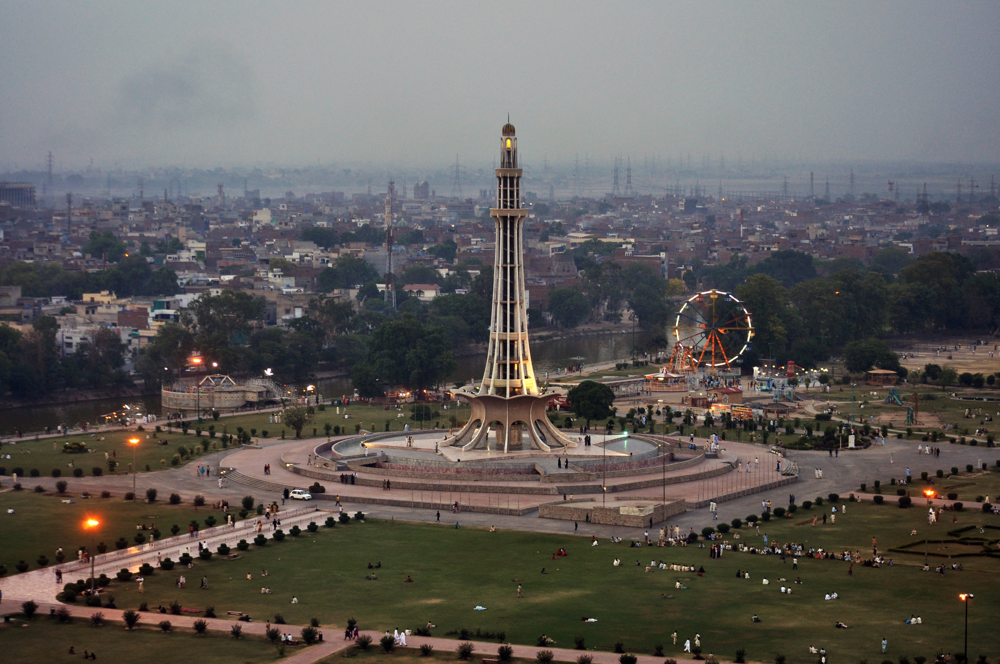
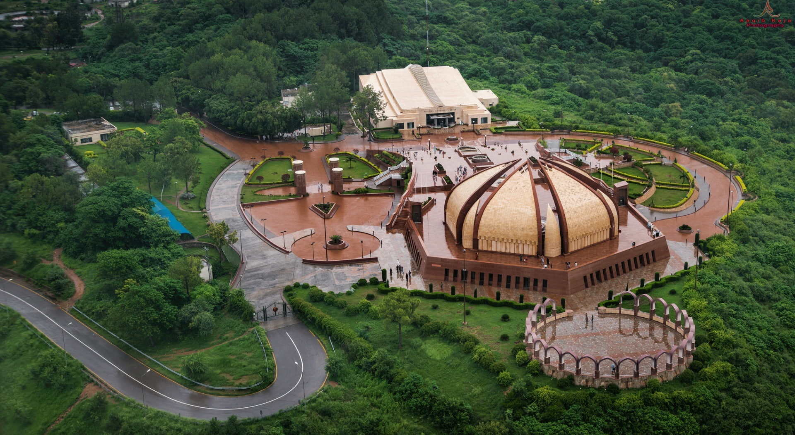
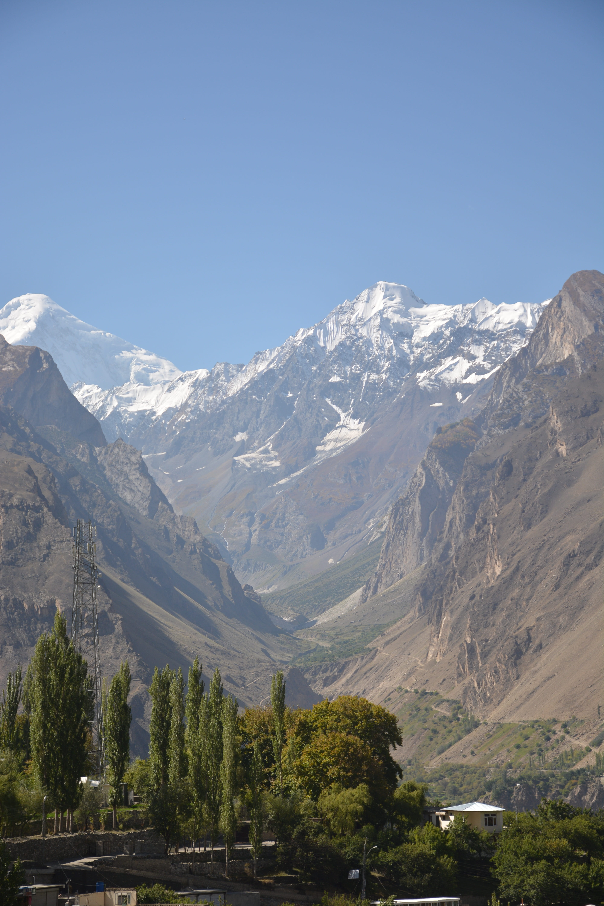
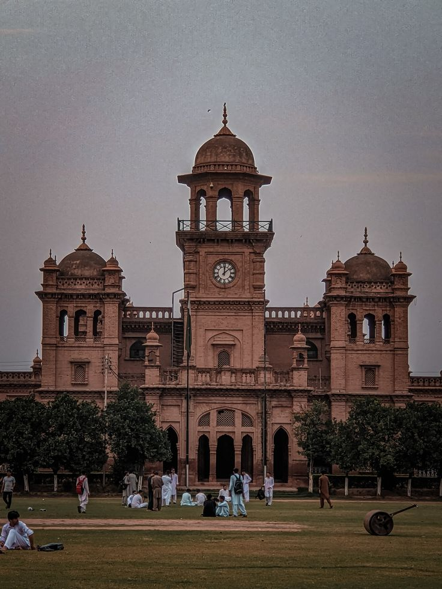
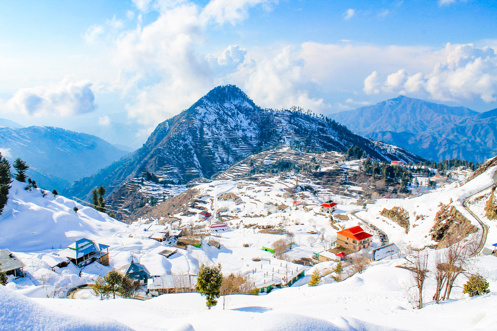
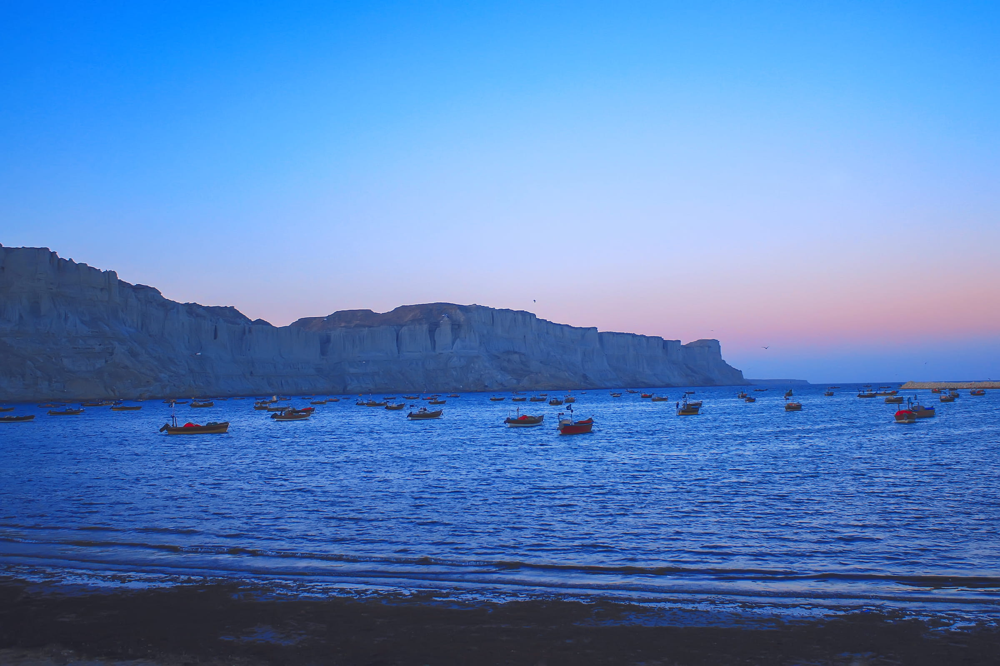
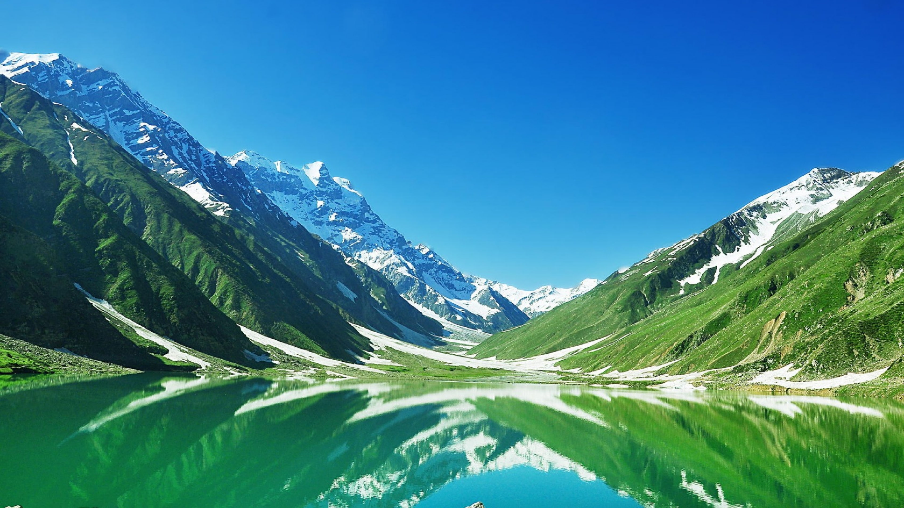

Explore Cities
Pakistan's
greatest
destinations
From imperial Lahore to the alpine Hunza, each city is a world unto itself — a layering of history, cuisine, and unforgettable hospitality.

Lahore
Punjab Province
The cultural heart. Mughal grandeur, Sufi poetry, finest food.
Culture & History
Hunza Valley
Gilgit-Baltistan
Paradise ringed by Rakaposhi. Cherry blossoms and warmth.
Mountain Paradise
Islamabad
Federal Capital
World's second most beautiful capital. Margalla Hills.
Capital City
Skardu
Gilgit-Baltistan
Gateway to K2. Base camp for world's most dramatic expeditions.
Adventure Base
Peshawar
Khyber Pakhtunkhwa
One of oldest living cities. 2,500 years of tales.
Ancient Heritage
Swat Valley
Khyber Pakhtunkhwa
"Switzerland of Pakistan" — emerald rivers, Buddhist ruins.
Scenic Valley
Karachi
Sindh Province
Megacity by the sea. Chaotic, glorious fusion of cultures.
Coastal Metropolis
Naran & Kaghan
Khyber Pakhtunkhwa
Mystical Lake Saif ul Malook — legend and glaciers.
Lakes & Glaciers